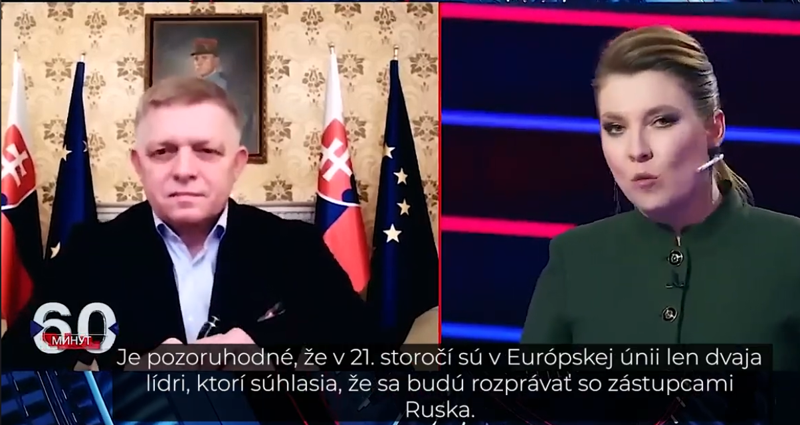

MEDIA LITERACY · 15 MINUTES
AI Fact-Checkingin Political Discussions
Manual and AI-Assisted Approaches
A practical SIFT-based workflow, from a claim to its evidence.
0:40. Open with the tension: political claims travel quickly, while checking them takes time. Explain that this is a practical tour of a repeatable process, not a verdict on a politician or party.
THE OUTLINE · 1:15
From a heated claim to a checkable answer
01 The problem Why political claims are hard to check well.
02 The method Use SIFT to slow down and follow evidence.
03 The process Study a published check, then try a manual and AI-assisted workflow.
1:15. Set expectations. Fact-checking tests factual statements against evidence. It cannot settle a value judgment or predict the future with certainty. The same evidentiary standard should apply regardless of who makes the claim.
01 · WHY CLAIMS ARE HARD TO ASSESS · 1:20
The art of persuasion

Still from a televised interview with Robert Fico; Slovak subtitles translate the exchange. Watch the clip ↗
ILLUSTRATIVE CLAIM “Everyone knows the real number is much higher.”
Opinion can sound like evidence.
High emotion
Short time frame
Vague language
Reasoning shortcuts
1:20. Explain how political messaging can be designed to persuade: emotional urgency, compressed formats and imprecise wording can make careful checking harder. The image gives a concrete example of a televised exchange; invite the audience to notice what is said, what is shown and what context they would need before assessing a claim.
02 · A SIMPLE ROUTINE · 1:15
SIFT turns “is this true?” into four useful moves
S Stop (emotions) Pause. Restate the claim neutrally; notice the emotional pull.
I Investigate (the speaker) Who is speaking? What expertise, incentives or track record matter?
F Find (other sources) Look for independent reporting, primary records and expert sources.
T Trace (the statement) Follow a quote, number or image back to its original setting.
SIFT is a workflow for evaluating information—not a verdict label.
1:15. Name each step and explain the acronym. Emphasize that SIFT structures attention: it does not mechanically guarantee truth. Each move can reveal a new question for the next.
03 · CASE FILE · 1:10
How do fact-checkers work?
D
Fico v ruskej štátnej televízii Rossija 1
Demagog.sk · interview aired 30 October 2024 · review published 8 November 2024
The page records and checks factual statements from Robert Fico’s interview on Russian state broadcaster Rossiya 1.
Its claims range across migration, public opinion, international law, sanctions, the war in Ukraine, and energy.
Fact-checking across Europe
EUfactcheck ↗ Journalism schools across Europe check political claims and build media literacy.
Maldita.es · Spain ↗ Independent Spanish newsroom checking public-interest claims and disinformation.
Faktabaari · Finland ↗ Finnish fact-checking and media-literacy service, including election checks.
Open the Demagog case file ↗
Fact-checking initiatives work in different languages and media contexts. EUfactcheck links journalism schools across Europe; Maldita.es and Faktabaari are examples from Spain and Finland. Compare their audiences and formats while noting the shared practice of checking specific factual claims against evidence.
04 · MANUAL CHECK · 1:30
Start by turning the sentence into a testable claim
ROBERT FICO, AS QUOTED BY DEMAGOG
“We have almost 5 million illegal migrants here.”
Original wording on Demagog: “Veď my tu máme skoro 5 miliónov nelegálnych migrantov.”
? Clarify the test: who does “we” mean, what does “illegal migrants” mean, and what date or population is being counted?
The statistic is checkable. Any broader judgment about migration policy is a separate question.
1:30. Read the quote. The key is to define its scope before searching. Demagog’s summary reports that Eurostat counted approximately 1.27 million people found to be illegally present in the EU in 2023. This is an administrative measure, not a census of every person without regular status. The comparison tests the scale of the stated number; it does not answer every possible interpretation of the phrase.
04 · MANUAL CHECK · 1:35
Follow the evidence chain—and keep the scope visible
CLAIM “Almost 5 million” Who / where / when?
→
DATA 1.27 million Found to be illegally present in an EU country (2023)
→
DEMAGOG RATING False Its published assessment
What a careful reader should notice: “found to be illegally present” is a specific recorded category. It is not interchangeable with border detections, people refused entry, or an estimate of everyone living irregularly.
? Assess the evidence: Does the Eurostat figure measure the same population and period as the claim?
Eurostat: 2023 immigration law-enforcement figures ↗ · Demagog’s claim and rationale ↗
1:35. Eurostat’s 6 May 2024 release says 1.27 million people were found to be illegally present in an EU country in 2023. Demagog uses that figure in its rationale and rates the claim False. Keep the metric and date attached whenever you repeat the comparison. Explain that “found” is an administrative observation: it depends on detection and legal definitions, so it should not be described as a complete count of all irregular migration.
05 · AUTOMATION · 1:30
A skill can guide an agent through the research loop
Select Choose a consequential, checkable claim.
→
Research Find primary data and independent context.
→
Interpret Check definitions, dates and uncertainty.
→
Explain Publish reasoning and sources for scrutiny.
→
Human review Check sources; decide what can be said
Put the workflow in a skill, then ask your agent to follow it. The skill guides the steps; you still verify sources and conclusions.
1:30. Explain that you can instruct an agent to use a skill that lays out this research loop. The skill gives repeatable steps and standards; the agent carries them out using the tools available in its environment. It can speed up bounded tasks, but a person still checks whether sources support the claims and decides what the evidence allows us to say.
06 · HOW AN AGENT SKILL IS PACKAGED · 1:00
A skill gives an agent reusable task instructions
SKILL FOLDER
sift-discussion/
├── SKILL.md
└── references/
└── manipulation-techniques.mdThe description helps compatible agents recognize when to use the skill.
01 · YAML metadata The name and description identify the skill and help the agent know when it applies.
02 · Instructions SKILL.md explains the method, decision steps, response format and ground rules.
03 · Supporting files Optional references hold detailed guidance the agent can consult for a task.
A skill is a set of instructions and resources—not a separate model or an automatic fact-checker.
1:00. Define the skill as a reusable package that guides an AI agent on when and how to handle a kind of request. The description helps it recognize a match. The main SKILL.md contains the workflow and response rules; this example also has a reference file for rhetorical techniques. The skill guides the agent but does not guarantee that its research or conclusions are correct.
07 · ASK AN AGENT TO WRITE A SKILL · 1:00
One agent can write the playbook for another
01 · START Empty GitHub repo Start with a repository for the skill and its supporting files.
→
02 · INSTRUCT Brief Copilot agent Describe the goal, trigger, steps, expected output and boundaries.
→
03 · BUILD Generate the skill Have it create SKILL.md, references and examples; review the result.
→
04 · REUSE Load it where supported Coding agent: use the skill folder.
The skill supplies the workflow. Each host still determines which tools and access the agent has.
ChatGPT Learn: build skills and use them across ChatGPT and Codex ↗
1:00. This is a meta-instruction workflow: use one coding agent to turn your requirements into reusable instructions for another. Start from an empty GitHub repository, tell Copilot what the skill should do and how it should behave, then inspect and refine the generated files. A compatible coding agent can load the skill folder. For ChatGPT on the web, package it as a plugin and install it where that workflow is available. The skill does not itself grant tools or repository access; the host controls those.
08 · KEEP THE HUMAN IN THE LOOP · 1:20
AI can organize evidence; people must validate the account
A Open the sources
B Check the measurement
C Preserve uncertainty
D Review the framing
A fluent summary can still be wrong. Evidence and human review set the limit.
1:20. Highlight citation laundering: a real source can be linked to a claim it does not support. A human needs to open it and check. Models can miss translation nuance, confuse categories or treat older information as current, so preserve dates and uncertainty.
TAKE THIS WITH YOU · 0:45
Pause. Check the source.Trace the claim.
Use AI to help you ask better questions and follow evidence faster.
0:45. Close by restating three habits: pause, check the source and trace the claim. The deck’s total target run time is 15 minutes. For discussion, ask which step people tend to skip when they encounter a political claim online.